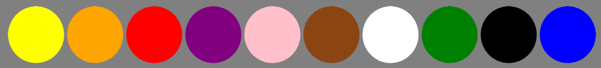

Consent form for participation in this online experiment
Computational Principles of Intelligence Lab
Designed by: Susanne Haridi
Email: cpilab@tuebingen.mpg.de
Informed Consent Form
This is a psychology experiment conducted by Eric Schulz, group leader of the Computational Principles of Intelligence Lab at the Max Planck Institute for Biological Cybernetics and the members of his lab. As mentioned on the MTurk page before you accepted the HIT, you MUST meet the following criteria to participate in the experiment:
18 years of age or older. Fluent speaker of English. Have not previously participated in this experiment.
This study is designed to investigate how people learn and make decisions. In this task, you will be asked to perform a sorting task and answer questions regarding the task. The study will take about 30-40 minutes and will pay a base fee of $3.00 plus a performance-dependent bonus of up to $8.00. The performance bonus is explained in more detail in the instructions that follow.
Your participation in this research is voluntary. You may refrain from answering any questions that make you uncomfortable and may withdraw your participation at any time without penalty by exiting this task and alerting the experimenter either via MTurk or via the e-mail address below (please be sure to provide your MTurk ID). You may choose not to complete certain parts of the task or answer certain questions. You may contact us at the address provided below if you have additional questions or concerns.
Other than monetary compensation, participating in this study will provide no direct benefits to you. But we hope that this research will benefit society at large by contributing towards establishing a scientific foundation for improving people’s learning abilities.
Your online username may be connected to your individual responses, but we will not be asking for any additional personally identifying information, and we will handle responses as confidentially as possible. We cannot, however, guarantee the confidentiality of information transmitted over the Internet. We will be keeping deidentified data collected as part of this experiment indefinitely. Data used in scientific publications will remain completely anonymous.
If you have any questions about the study, feel free to contact our lab. Dr. Schulz and his labmembers can be reached at cpilab@tuebingen.mpg.de.
By selecting the “consent” option below, I acknowledgethat that I have read this consent form, and that I agree to take part in the research.
Data Protection Information:
We also ask you to consent to having seen and understood our data protection policy, which can be viewed by clicking on the blue text below.
I have received and took note of the written Data Protection Information Sheet for this study. In doing so, I had sufficient time and opportunity to ask questions about data protection and reconsider my participation in the study.
I am aware that:
the processing and use of the collected data occurs in a pseudonymised form within the scope of the legally prescribed provisions.
As a general rule, the storage occurs in the form of questionnaires, as well as on electronic data media, for a duration of 10 years
or longer, if this is required by the purpose of the study.
by providing of further personal data in pseudonymised form, collected personal data may be used for the preparation of anonymised
scientific research work and may also be published and used in an anonymised form in medical journals, scientific publications
and publicly accessible scientific databases, so that a direct assignment to my person cannot be established.
the information obtained during the course of this study may also be sent in an anonymised form to cooperation partners within the
scope of the European General Data Protection Regulation for scientific purposes and to cooperation partners outside of the
European Union, i.e. to countries with a lower data protection level (this also applies to the USA).
the data collected within the scope of the study can also be used and processed in the future inside of the Institute.
I was informed about my rights, that at any time:
I can withdraw this declaration of consent.
I can request information about my stored data and request the correction or blocking of data.
By cancellation of my participation in the study, I can request that my personal data collected until that time are immediately deleted or anonymised.
I can request that my personal data are handed out to me or to third parties (if technically feasible).
I herewith declare that:
I have been adequately informed about the collection and processing of my personal data and rights.
I consent to the collection and processing of personal data within the scope of the study and its pseudonymised disclosure, so that
only the persons conducting the study can establish a link between the data and my person.
By clicking the button below I confirm and consent to what is written above.
Structure of the Experiment:
Thank you for participating in our study!
Please read the following instructions very carefully. You will be tested on your understanding later.
In the following, we will tell you how the study is structured and what you will have to do.
The study consists of 5 parts:
1. Experiment instructions and practice trials. (~5 min)
In this first part, we will explain how the experiment works and let you practice the task on a few trials.
2. Comprehension questions. (~1 min)
After the practice trials we will test your understanding of the task with three short questions.
You will need to get these questions right to continue on to the main experiment, so please read the instructions carefully.
3. Experiment. (~20-30 min)
After the comprehension questions the main experiment will start. Your bonus will depend on the percentage of trials you get correct in this part.
But please also be as fast as possible.
4. Colorblindness test. (~1 min)
As mentioned in the HIT description, this experiment requires you to be able to destinguish between the colors shown below.
If you have trouble differentiating these colors, you can stop the task and return to the HIT at no penalty.

5. Demographic questions. (~1-2 min)
At the very end we will ask you to answer a few final questions, before we send you off with the completion code you need to claim your payment.
Thank you very much for taking part in our study!
Once you press the Start button below the screen will turn grey and the instructions will start.
One more thing before we start:
Please do not use the back and forward buttons of the browser to navigate within this experiment. This might prevent the task from working correctly.
Now let's get started!
Once you press the button below, the screen will turn grey and the instructions for the experiment will start.
Ups. omething went wrong.
You have now completed the experiment.
Congratulations! You have earned a bonus of $0.00
To earn your base fee of $X.XX, please copy and paste the following completion code into the Amazon MTurk window for this HIT: COMPLETION CODE